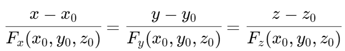

切平面和线性近似 | Tangent planes & Linear approximations
切平面 | Tangent planes

法线方程

线性近似 | Linear approximations
函数 f 在 (a, b) 点上的线性近似或者说切面近似
Linear approximation or the tangent plane approximation of f at (a, b)
f(x, y) ≈ f(a, b) + fx(a, b)(x - a) + fy(a, b)(y - b)
微分 | Differentials
对于二元函数 f(x, y)，有 z = f(x, y)，于是，z 的微分即为函数 f 的全微分（total differential）。